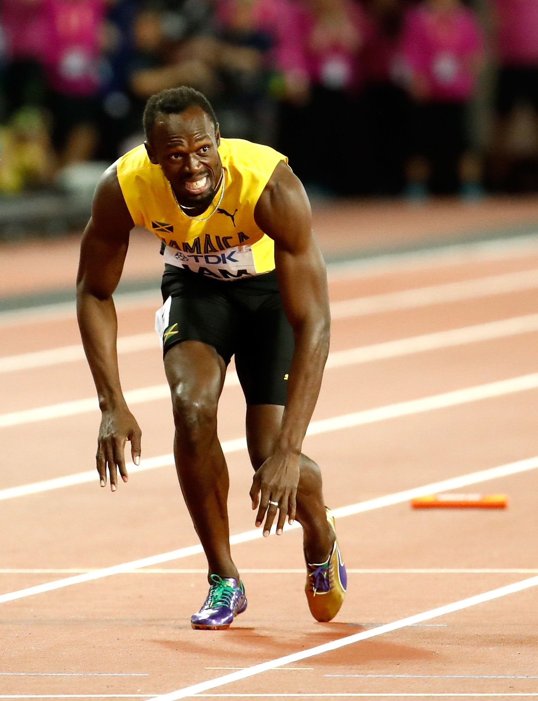

A História de Usain Bolt

Usain St. Leo Bolt, OJ, OD (Trelawny, 21 de agosto de 1986)
é um ex-velocista jamaicano multicampeão olímpico e mundial nessa modalidade.
Depois de se aposentar como velocista em 2017, teve uma rápida atuação como jogador de futebol.
É o único atleta na história a tornar-se tricampeão em duas modalidades de pista em Jogos Olímpicos de forma consecutiva (100 metros rasos e 200 metros rasos)
e bicampeão também de forma consecutiva na modalidade revezamento 4 x 100 metros. É também o único atleta a conquistar oito medalhas de ouro em provas de velocidade,
sendo dez vezes campeão mundial.